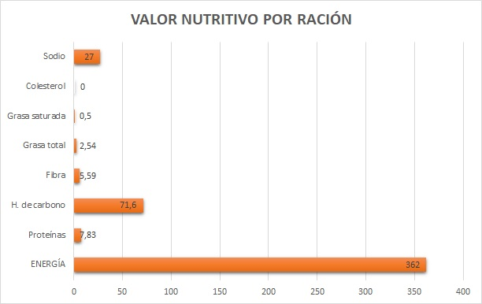

ARROZ CON ZANAHORIA
INGREDIENTES:
- 350 grs. de arroz integral
- 250 grs. de zanahorias
- 1 cebolla
- 2 dientes de ajo
- 800 ml. de caldo de verduras (sin sal)
INGREDIENTES COMPLEMENTARIOS:
- Perejil
- 7 cucharadas de aceite de oliva
- Sal marina
PREPARACIÓN:
- Poner a remojar el arroz en agua fría durante una noche, o bien una hora en agua muy caliente.
- Pelar y cortar las zanahorias en rodajas, y las cebollas en aros.
- Pelar y picar los ajos y el perejil.
- Calentar el aceite en una sartén grande y rehogar la cebolla.
- Cuando la cebolla este transparente, incorporar la zanahoria.
- Pasados 3 minutos, agregar el arroz escurrido y remover.
- En una olla aparte, llevar a ebullición el caldo de verduras y la sal.
- Incorporar en la sartén el caldo hirviendo.
- Añadir el ajo y el perejil picados y reducir el fuego fuerte a fuego suave. Dejar hervir hasta que el arroz esté tierno, seco y suelto (entre 20 y 25 minutos).
- Apagar el fuego y dejar reposar cinco minutos antes de servir.
- Servir caliente.
ALTERNATIVA MÁS SALUDABLE:
En lugar de rehogar los ingredientes, incorporarlos en crudo al caldo de verduras hirviendo
CONSEJOS PARA LA SALUD
Este plato combina adecuadamente las propiedades nutritivas y digestivas del arroz, junto con el efecto suavizante y vitamínico de la zanahoria. Además, el caldo de verdura lo enriquece con sales minerales de acción diurética (que favorece la eliminación de orina), depurativa (que limpia la sangre) y alcalinizante.
El consumo de este plato de arroz con zanahoria contribuye eficazmente a la prevención de los siguientes trastornos:
- Problemas de la vista, debido a la falta de beta-caroteno (provitamina A), como la irritación de la conjuntiva, la sequedad ocular y la falta de adaptación a la oscuridad
- Arteriosclerosis e infarto, gracias a la acción protectora de la fibra del arroz integral, y de la provitamina A de la zanahoria y el ajo. Además, este plato es muy bajo en sodio -si no se le añade sal- y en grasa saturada, y carece por completo de colesterol.
- Colon irritable y colitis, por el efecto suavizante que ejercen el arroz y la zanahoria sobre la mucosa intestinal.
